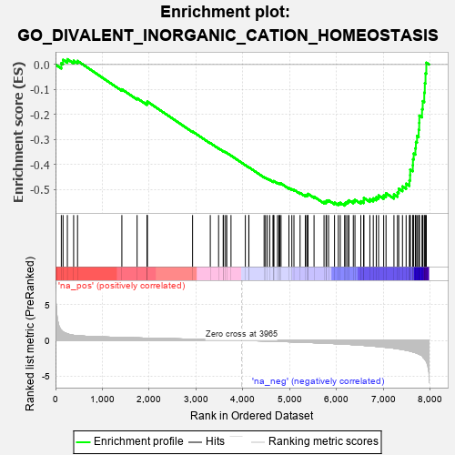
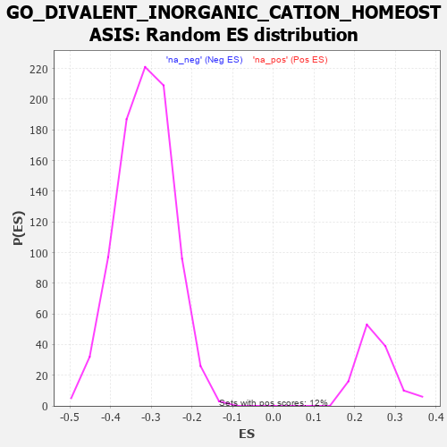

| | | Dataset | 7d |
| Phenotype | NoPhenotypeAvailable |
| Upregulated in class | na_neg |
| GeneSet | GO_DIVALENT_INORGANIC_CATION_HOMEOSTASIS |
| Enrichment Score (ES) | -0.5648663 |
| Normalized Enrichment Score (NES) | -1.7913576 |
| Nominal p-value | 0.0 |
| FDR q-value | 0.01768696 |
| FWER p-Value | 0.488 |
Table: GSEA Results Summary

Fig 1: Enrichment plot: GO_DIVALENT_INORGANIC_CATION_HOMEOSTASIS
Profile of the Running ES Score & Positions of GeneSet Members on the Rank Ordered List
| PROBE | GENE SYMBOL | GENE_TITLE | RANK IN GENE LIST | RANK METRIC SCORE | RUNNING ES | CORE ENRICHMENT | | 1 | ADCY8 | | | 124 | 1.418 | 0.0056 | No |
| 2 | CSRP3 | | | 161 | 1.186 | 0.0189 | No |
| 3 | THADA | | | 253 | 0.931 | 0.0214 | No |
| 4 | BAX | | | 387 | 0.711 | 0.0152 | No |
| 5 | LRP1 | | | 470 | 0.648 | 0.0146 | No |
| 6 | P2RY1 | | | 1416 | 0.407 | -0.0991 | No |
| 7 | JPH1 | | | 1741 | 0.347 | -0.1350 | No |
| 8 | MCUR1 | | | 1953 | 0.313 | -0.1570 | No |
| 9 | MICU1 | | | 1954 | 0.313 | -0.1523 | No |
| 10 | CCR4 | | | 1959 | 0.312 | -0.1481 | No |
| 11 | ERO1A | | | 2925 | 0.162 | -0.2681 | No |
| 12 | SMAD3 | | | 3303 | 0.105 | -0.3143 | No |
| 13 | CDK5 | | | 3480 | 0.080 | -0.3354 | No |
| 14 | GPR18 | | | 3578 | 0.063 | -0.3467 | No |
| 15 | CHERP | | | 3587 | 0.062 | -0.3468 | No |
| 16 | RIC3 | | | 3629 | 0.055 | -0.3512 | No |
| 17 | FIS1 | | | 3654 | 0.051 | -0.3535 | No |
| 18 | HTR1B | | | 3745 | 0.035 | -0.3644 | No |
| 19 | ATG5 | | | 4051 | -0.016 | -0.4028 | No |
| 20 | ABL1 | | | 4125 | -0.027 | -0.4117 | No |
| 21 | PLCE1 | | | 4127 | -0.028 | -0.4114 | No |
| 22 | TMCO1 | | | 4451 | -0.085 | -0.4510 | No |
| 23 | JPH3 | | | 4481 | -0.091 | -0.4533 | No |
| 24 | NPTN | | | 4519 | -0.098 | -0.4566 | No |
| 25 | MICU3 | | | 4571 | -0.110 | -0.4614 | No |
| 26 | LETM1 | | | 4644 | -0.127 | -0.4686 | No |
| 27 | NMUR2 | | | 4646 | -0.127 | -0.4668 | No |
| 28 | ITPR1 | | | 4661 | -0.130 | -0.4666 | No |
| 29 | CNNM4 | | | 4738 | -0.147 | -0.4740 | No |
| 30 | PLCG1 | | | 4770 | -0.151 | -0.4757 | No |
| 31 | MYO5A | | | 4787 | -0.155 | -0.4754 | No |
| 32 | P2RX4 | | | 4813 | -0.161 | -0.4761 | No |
| 33 | ACKR4 | | | 4981 | -0.194 | -0.4944 | No |
| 34 | PDPK1 | | | 5043 | -0.207 | -0.4990 | No |
| 35 | DRD2 | | | 5088 | -0.221 | -0.5013 | No |
| 36 | GPR4 | | | 5219 | -0.250 | -0.5140 | No |
| 37 | NPY2R | | | 5331 | -0.281 | -0.5238 | No |
| 38 | ITPR3 | | | 5361 | -0.288 | -0.5232 | No |
| 39 | GRIN1 | | | 5381 | -0.291 | -0.5212 | No |
| 40 | DLG4 | | | 5388 | -0.293 | -0.5176 | No |
| 41 | VDR | | | 5517 | -0.325 | -0.5289 | No |
| 42 | CALCR | | | 5730 | -0.386 | -0.5500 | No |
| 43 | CIB2 | | | 5774 | -0.398 | -0.5494 | No |
| 44 | TRPC6 | | | 5784 | -0.401 | -0.5445 | No |
| 45 | ANXA7 | | | 5827 | -0.413 | -0.5436 | No |
| 46 | CXCR5 | | | 5954 | -0.456 | -0.5528 | No |
| 47 | TRPC3 | | | 6035 | -0.483 | -0.5556 | No |
| 48 | CALR | | | 6077 | -0.499 | -0.5533 | No |
| 49 | STIM1 | | | 6169 | -0.528 | -0.5569 | Yes |
| 50 | ATP7B | | | 6194 | -0.535 | -0.5519 | Yes |
| 51 | RGN | | | 6233 | -0.547 | -0.5485 | Yes |
| 52 | AP3D1 | | | 6261 | -0.558 | -0.5435 | Yes |
| 53 | GALR2 | | | 6355 | -0.599 | -0.5463 | Yes |
| 54 | TRPM4 | | | 6390 | -0.612 | -0.5414 | Yes |
| 55 | TRPV4 | | | 6515 | -0.668 | -0.5470 | Yes |
| 56 | P2RX5 | | | 6576 | -0.699 | -0.5441 | Yes |
| 57 | CLN3 | | | 6580 | -0.699 | -0.5340 | Yes |
| 58 | EGFR | | | 6708 | -0.765 | -0.5386 | Yes |
| 59 | TRPM8 | | | 6781 | -0.800 | -0.5356 | Yes |
| 60 | PTH1R | | | 6845 | -0.839 | -0.5310 | Yes |
| 61 | HEXB | | | 6894 | -0.864 | -0.5241 | Yes |
| 62 | CCR2 | | | 7003 | -0.939 | -0.5236 | Yes |
| 63 | GRM5 | | | 7053 | -0.969 | -0.5153 | Yes |
| 64 | CNGB1 | | | 7222 | -1.096 | -0.5201 | Yes |
| 65 | ANK2 | | | 7298 | -1.170 | -0.5120 | Yes |
| 66 | TRPM1 | | | 7324 | -1.197 | -0.4971 | Yes |
| 67 | GRM1 | | | 7404 | -1.272 | -0.4880 | Yes |
| 68 | VAPB | | | 7482 | -1.378 | -0.4770 | Yes |
| 69 | GRIK2 | | | 7552 | -1.471 | -0.4636 | Yes |
| 70 | CALM1 | | | 7567 | -1.499 | -0.4428 | Yes |
| 71 | TRPV6 | | | 7569 | -1.502 | -0.4203 | Yes |
| 72 | TRPA1 | | | 7625 | -1.608 | -0.4031 | Yes |
| 73 | PKD1 | | | 7628 | -1.611 | -0.3791 | Yes |
| 74 | MCU | | | 7644 | -1.637 | -0.3563 | Yes |
| 75 | TRPM2 | | | 7680 | -1.712 | -0.3350 | Yes |
| 76 | ANK3 | | | 7690 | -1.740 | -0.3099 | Yes |
| 77 | BOK | | | 7715 | -1.817 | -0.2856 | Yes |
| 78 | P2RY8 | | | 7750 | -1.912 | -0.2612 | Yes |
| 79 | TRPM7 | | | 7761 | -1.936 | -0.2333 | Yes |
| 80 | PDE4D | | | 7764 | -1.944 | -0.2043 | Yes |
| 81 | PKD2 | | | 7822 | -2.167 | -0.1789 | Yes |
| 82 | GRIA1 | | | 7836 | -2.260 | -0.1465 | Yes |
| 83 | CALM3 | | | 7869 | -2.525 | -0.1125 | Yes |
| 84 | FYN | | | 7881 | -2.622 | -0.0745 | Yes |
| 85 | CAV3 | | | 7896 | -2.739 | -0.0350 | Yes |
| 86 | NPSR1 | | | 7913 | -2.947 | 0.0074 | Yes |
Table: GSEA details [plain text format]

Fig 2: GO_DIVALENT_INORGANIC_CATION_HOMEOSTASIS: Random ES distribution
Gene set null distribution of ES for GO_DIVALENT_INORGANIC_CATION_HOMEOSTASIS